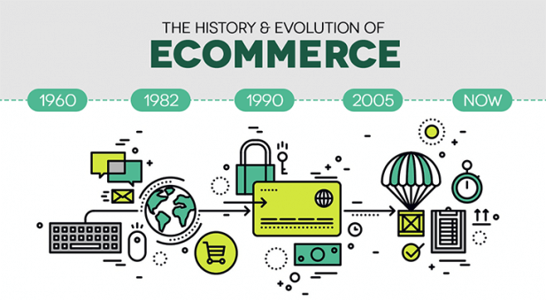
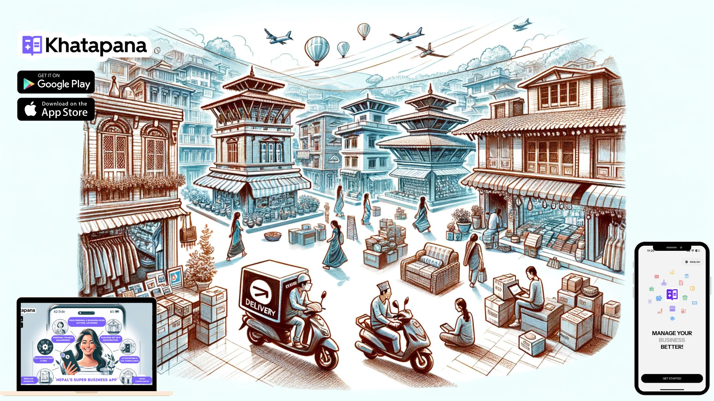

History and Evolution of E-commerce
Global Evolution of E-commerce
E-commerce has undergone significant transformations over the decades, evolving from simple transactions to an integral part of global trade.
- 1960s: Introduction of Electronic Data Interchange (EDI) for business transactions.
- 1979: Michael Aldrich invents online shopping using a modified TV and telephone line.
- 1991: The internet becomes publicly available, enabling online trade.
- 1994: Launch of Amazon and eBay, revolutionizing digital commerce.
- 2000s: Growth of digital payment solutions like PayPal.
- 2010s: Rise of mobile commerce (m-commerce) with smartphone usage.
- 2020s: Expansion of AI, blockchain, and personalized e-commerce experiences.

With high-speed internet and secure payment gateways, e-commerce has evolved into a dominant force in global trade. Businesses leverage AI and big data to enhance user experiences, making transactions more personalized and efficient.
E-commerce in Nepal
Nepal’s e-commerce industry started gaining traction in the early 2000s. Below are the key milestones:
- 2000s: Emergence of early classified websites and small-scale e-commerce businesses.
- 2010s: Platforms like SastoDeal, Daraz, and HamroBazar became popular.
- 2020s: Growth of digital payment services like eSewa and Khalti, boosting online transactions.

Despite rapid growth, Nepal faces several challenges in e-commerce, including logistics issues, digital literacy gaps, and trust concerns. However, with increasing internet penetration, smartphone adoption, and government initiatives supporting digital transformation, Nepal's e-commerce industry is set for significant expansion.